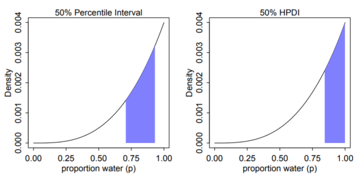

Chapter 3
Posterior Density
Sampling from the posterior distribution means we can work with counts (easier, more intuitive) instead of working with the density which is working with integrals. Plus MCMC results are count based.
Sampling from the posterior density
samples <- sample(parameter values vector, prob = posterior density from output of model, size = # of samples you want, replace = T)- Parameter values are the conjectures,
- Posterior is all the parameter values’ likelihood x prior (i.e. updated relative plausibilities of the conjectures)
Grid Approximation of a posterior for 1 parameter:
p_grid <- seq( from=0, to=1, length.out=1000) # parameter values vector prior <- rep(1,1000) # repeat 1 a thousand times to create a flat prior likelihood <- dbinom(3, size = 3, prob=p_grid) # plausibility of 3 events out of 3 observations for each each conjectured parameter value posterior_unstd <- likelihood * prior posterior <- posterior_unstd / sum(posterior_unstd) # sampling the posterior density samples <- sample(p_grid, prob = posterior, size = 10000, replace = T)- “size” is how many samples we’re taking
- (See stat.rethinking brms recode bkmk for ggplot graphs and dplyr code)
sum()of posterior samples gives probability for a specified parameter valuequantile()of posterior samples gives the parameter value for a specified probability
Common questions to ask about the posterior distribution
- How much of the posterior probability lies below some parameter value?
- Example: Whats the posterior probability that the proportion of water on the globe is below 0.50?
- Answer:
sum(samples < 0.50) / total_samples(= 1e4, see above)- “/total sample” is the procedure if there are 1 or more parameters represented in the posterior density
- How much of the posterior probability is between two parameter values?
- Example: The posterior probability that the proportion of water is between 0.50 and 0.75?
- Answer:
sum(samples > 0.50 & samples < 0.75) / total_samples
- Which parameter value marks the lower 5% of the posterior probability?
- i.e. Which proportion of water has a 5% probability?
- Answer:
quantile(samples, 0.05)
- Which range of parameter values contains the middle 80% of the posterior probability?
- Defined as the [Percentile Interval (PI)
- Frequentist CIs are normally percentile intervals, just of the sampling distribution instead of the posterior
- Fine in practice for the most part, but bad for highly skewed posterior distributions as it’s not guaranteed to contain the most probable value.. In such cases use HPDI (see below).
- If you do have an a posterior that’s highly skewed, make sure to also report the entire distribution.
- Defined as the [Percentile Interval (PI)
- Which range of proportions of water is the true value likely to be in with a 80% probability?
- Answer:
quantile(samples, c( 0.10, 0.90))
- Answer:
- Which parameter value has the highest posterior probability?
- Answer: the MAP (see below)
- How much of the posterior probability lies below some parameter value?
Summarizing the Posterior
Credible Interval - General Bayesian term that is interchangeable with confidence interval. Instead an interval of probability density or mass, it’s based on an interval of the posterior probability. If choice of interval (percentile or hdpi) affects inferences being made, then also report entire posterior distribution.
Highest Posterior Density Interval (HPDI) - The narrowest interval containing the specified probability mass. Guaranteed to have the value with the highest posterior probability.
Left: 50% percentile interval assigns equal mass (25%) to both the left and right tail. As a result, it omits the most probable parameter value, p = 1.
Right: 50% HPDI finds the narrowest region with 50% of the posterior probability. Such a region always includes the most probable parameter value.
Disadvantages:
- Expensive
- Suffers from Simulation Variance (i.e. sensitive to number of samples).
- Less familiar to most audiences
See Chapter 4 >> Uncertainty for brms code
Maximum a posteriori (MAP) - value with the highest posterior probability, aka mode of the posterior.
The choice of type of point estimate (MAP, median, mean) should depend on a loss function (e.g. L1, squared –> median, L2 aka quadratic –> mean, etc).
- If the loss is asymmetrical, e.g. cost rises exponentially as loss increases, then I think he’s saying that’s a good time to use MAP.
Dummy Data
Dummy Data are simulated data (aka fake data) to take the place of real data.
- Uses
- Checking model fit and model behavior
- Checking the effectiveness of a research design (e.g. power analysis)
- Forecasting
dbinom(0:2, size = 2 , prob = 0.70)gives likelihoods for observing 0Ws, 1W, 2Ws for a trial with 2 flips given conjecture, p = 0.70rbinom(10, size = 2, prob = 0.70)is generating 10 data points given the conjecture (aka parameter value), p = 70%- 10 experiments (or trials) of flipping the globe twice
- output being how many Ws were observed in each experiment
- the output are dummy observations
- rbinom means its a binomial distribution, so only two possible outcomes in each trial
- size = 2 means there are 2 flips per trial and means there are to be either 2 events, 1 event, or 0 events.
- In the globe flipping Example where the event is landing on Water: 2 Water - 0 Land, 1 W - 1 L, 0 W - 2 L
- prob = 0.70 is probability (plausibility of an event) (e.g. landing on Water)
table(rbinom(100000, 2, 0.70) / 100000)is very similar to the output of dbinom above.- Increasing the size from 2 to 9 yields a distribution where the mode is around the true proportion (which would be 0.70 * 9 = 6.3 Ws)
.png)
- The sampling distribution is still wide though, so the majority of experiments don’t result in the around 6 Ws.
- Represents the “garden of forking paths” from Ch. 2
- 10 experiments (or trials) of flipping the globe twice
- Uses
Posterior Predictive Distribution
The PPD is the (simulated) distribution of outcome values we expect to see in the wild given this model and these data.
Equivalent to computing all the sampling distributions for each p and then averaging (by using the posterior distribution) them together (or integrating over the posterior density). This propagates the uncertainty about p of the posterior distribution into the PPD.
.png)
(Intuitive) Steps in creating the PPD for the globe example
- A probability of hitting water (aka parameter value) is sampled from the posterior density (top pic)
- More likely parameter values get sampled more often
- That sampled probability is associated with a count distribution (aka sampling distribution histogram) (middle pic) where the x-axis values are possible total counts of the event after each trial.
- Each p’s sampling distribution is the distribution we’d expect to see if that p was true. (e.g. bell curve for p = 0.50)
- e.g.
rbinom(10, size = 9, prob = 0.70)where the sampled probability is 0.70, trials = 10, and 9 is the number of globe tosses per trial- Therefore, there’s a maximum of 9 events (i.e. hitting the water) possible per trial
- This count distribution (middle pic) gets sampled, and that sampled count is tallied in the PPD (bottom pic)
- e.g. if a 6 is sampled from the count distribution, it’s tallied in the PPD for the “6” on the x-axis
- Repeat (e.g. 1e4 times)
- A probability of hitting water (aka parameter value) is sampled from the posterior density (top pic)
Computing a PPD:
rbinom(number of trials, size = number of flips per trial, prob = samples from posterior density)- These are counts unlike the posterior density
- therefore maybe the shape is dependent on “size”
- The posterior distribution is used as weights to calculate a weighted, average frequency of W observations for each trial.
- Example:
rbinom(10000, 9, samples)- For trial 1, a coin is flipped 9 times.
- The total number of heads for each trial is determined by sampling the posterior density
- Repeat another 999 times
- A vector is returned where each value is the total number of heads for that trial (e.g. length in example = 10000)
- For trial 1, a coin is flipped 9 times.
Example: PPD for tossing the globe
p_grid <- seq( from=0, to=1, length.out=1000) # parameter values vector prior <- rep(1,1000) # repeat 1 a thousand times to create a flat prior likelihood <- dbinom(6, size = 9, prob=p_grid) # plausibility of 3 events out of 3 observations for each each conjectured parameter value posterior_unstd <- likelihood * prior posterior <- posterior_unstd / sum(posterior_unstd) samples <- sample(p_grid, prob = posterior, size = 1e4, replace = TRUE) # sample from posterior ppd <- rbinom(10000, size = 9, prob = samples) # simulate observations to get the PPD hist(ppd)Example: brms way
b3.1 <- brm(data = list(w = 6), family = binomial(link = "identity"), w | trials(9) ~ 0 + Intercept, # this is a flat prior prior(beta(1, 1), class = b, lb = 0, ub = 1), iter = 5000, warmup = 1000, seed = 3, file = "fits/b03.01") # sampling the posterior f <- fitted(b3.1, summary = F, # says we want simulated draws and not summary stats scale = "linear") %>% # linear outputs probabilities as_tibble() %>% set_names("p") # posterior probability density (top pic) f %>% ggplot(aes(x = p)) + geom_density(fill = "grey50", color = "grey50") + annotate(geom = "text", x = .08, y = 2.5, label = "Posterior probability") + scale_x_continuous("probability of water", breaks = c(0, .5, 1), limits = 0:1) + scale_y_continuous(NULL, breaks = NULL) + theme(panel.grid = element_blank()) # ppd f <- f %>% mutate(w = rbinom(n(), size = n_trials, prob = p)) # ppd histogram (bottom pic) f %>% ggplot(aes(x = w)) + geom_histogram(binwidth = 1, center = 0, color = "grey92", size = 1/10) + scale_x_continuous("number of water samples", breaks = seq(from = 0, to = 9, by = 3)) + scale_y_continuous(NULL, breaks = NULL, limits = c(0, 5000)) + ggtitle("Posterior predictive distribution") + coord_cartesian(xlim = c(0, 9)) + theme(panel.grid = element_blank())Same process is used for a Prior Predictive Distribution
- The prior distribution takes the place of the posterior density in this case
For a continuous distribution, see example in Chapter 4 >> Prior Predictive Distribution
Model fit
- 2 types of uncertainty:
- Predicted Observation Uncertainty
- Even if we did know the correct conjecture, p, we wouldn’t know with certainty the outcome of the next trial, unless the correct p = 0 or p = 1.
- See histogram in previous section
- Even if the “true” conjecture (e.g. p = 0.70) is known, there is uncertainty in the count of W observations the next trial will yield.
- Sounds like this is quantified by predictive intervals (PI) given some α
- Uncertainty About p
- The posterior distribution over p embodies this uncertainty.
- And this is quantified by credible intervals (CI) given some α
- Predicted Observation Uncertainty
- GOF Question: If we were to make predictions about the most probable p using this model, how consistent is our model with the data?
- Answer: If the shape of the PPD matches the shape of the sampled posterior distribution, then the model is consistent with the data. (i.e. good fit)
- 2 types of uncertainty: